There are no values of x where ${f}''\left( x \right)=0$.
Values of x where ${f}''\left( x \right)$ is undefined:
$ 2x-5=0$
$ x=\frac{5}{2}$
Values of x where $f\left( x \right)$is undefined:
$2x-5=0$
$x=\frac{5}{2}$
Separate into intervals using: $x=\frac{5}{2}$.
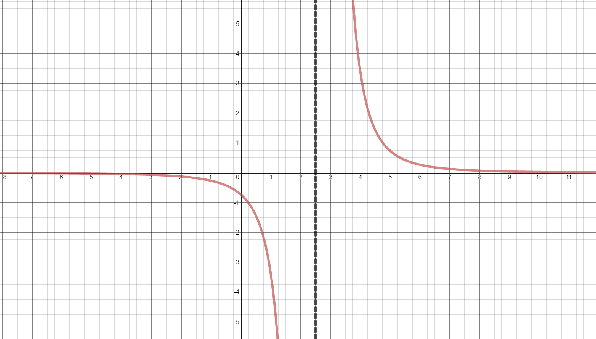
Sign chart for ${f}''\left( x \right)$: negative, ${f}''\left( \frac{5}{2} \right)=$ undefined, positive
Concave up:
The graph of $f(x)$ is concave up on the interval $\left( \frac{5}{2},\infty \right).$
Concave down:
The graph of $f(x)$ is concave down on the interval $\left( -\infty ,\frac{5}{2} \right).$
Inflection Points:
Even though the function changes from concave down to concave up at $x=\frac{5}{2}$, there are no points of inflection because the function is undefined at $x=\frac{5}{2}.$
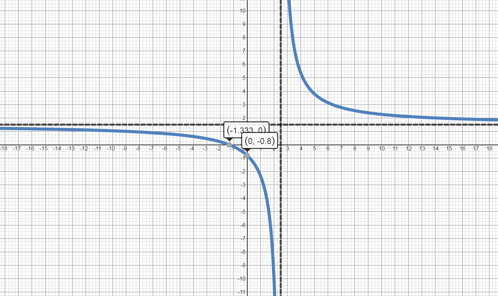
The annual first quarter change in revenue for Apple, Inc. is given by the regression model: $$f(x)=-0.005x^4+0.113x^3-0.889x^2+7.946x-5.346$$ where x is Years Since 1998.
Use the Second Derivative Test to analyze the function. Identify intervals of concavity and points of inflection on the graph of the function.
$f''(x)=-0.06x^2+0.678x-1.778$
Identify Critical Values and Partitions for the Sign Chart.
Values of x where $f''(x)=0:$
$f''(x)=0$ at $x= 4.137$ and $x= 7.163$
Values of x where $f''(x)$ is undefined:
There are no values of x where $f''(x)$ is undefined.
Values of x where $f(x)$ is undefined:
There are no values of x where $f(x)$ is undefined.
Separate into intervals using: $x=4.137$ and $x=7.163$.
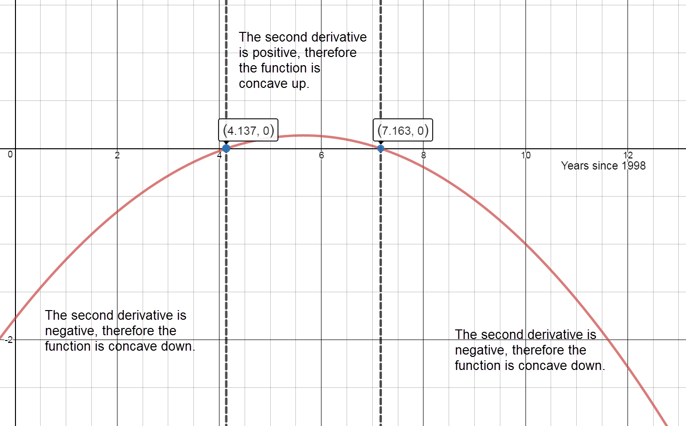
Sign graph of $f''(x)$ reading left to right: negative, ${f}'\left(4.137\right)=0,$ positive, ${f}'\left(7.163\right)=0,$ negative
Intervals of Concavity
Concave Up:
$(4.137, 7.163)$
The percent change in revenue is increasing at an increasing rate from $x=4.137$ to $x=7.163$.
Concave down:
$\lbrack0,\;4.137)\;\cup\;(7.163,\;18\rbrack$
The percent change in revenue is increasing at a decreasing rate from $x=0$ to $x=4.137$.
The percent change in revenue is increasing at a decreasing rate from $x=7.163$ to $x=12.358$ (the maximum) and decreasing at an increasing rate from $x=12.358$ to $x=18$.
Inflection points:
$(4.137, 18.848)$ and $(7.163, 34.325)$
According to the model, the percent change in revenue is changing most rapidly at $x=4.137$ and $x=7.163$.
Graph $f(x).$
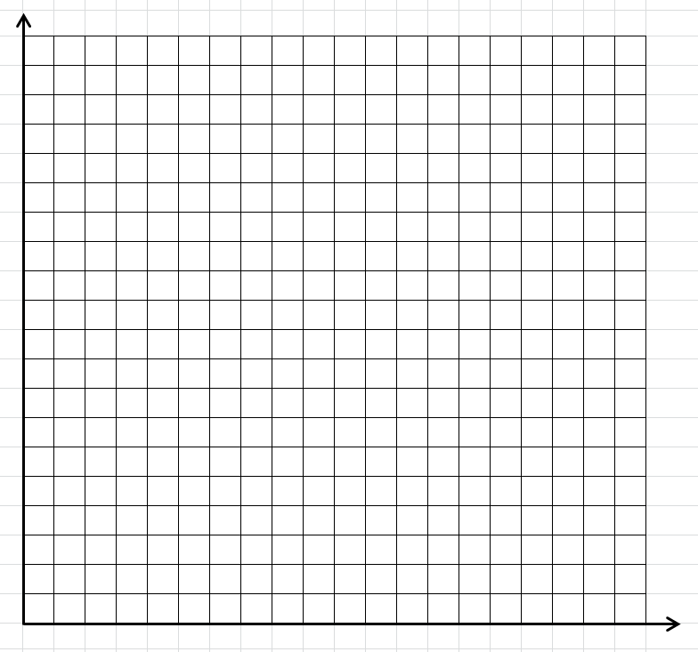
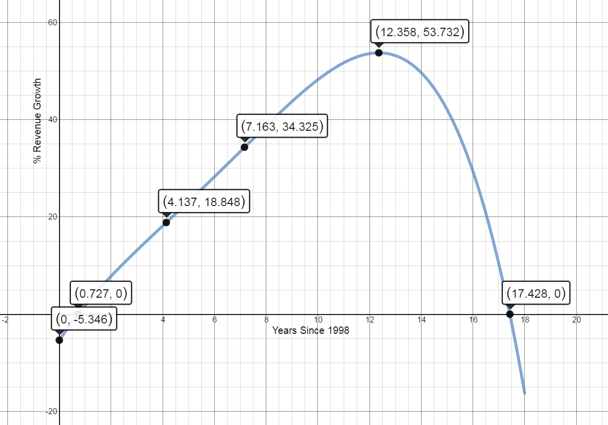
Using data from the Federal Reserve, the Dow S&P 500 annual percent return on investments for the years 2008-2014 can be modeled by the following equation: $$A(t) = - 1.64{t^4} + 20.85{t^3} - 86.05{t^2} + 127.87t - 36.24$$ where t
is in years since 2008 and A(t) is in percent.
Use the Second Derivative Test to analyze the function. Identify intervals of concavity and points of inflection on the graph of the function.
${A}''\left( t \right)=-19.68{{t}^{2}}+125.1t-172.10$
Graph the critical numbers on a number line and determine the sign for each interval.
Values of t where ${A}''(t)=0.$
$t \approx 2.013$ and $t \approx 4.343$
Values of t where ${A}''\left( t \right)$ is undefined.
There are no values of t where ${A}''(t)$ is undefined.
Values of t where $A\left( t \right)$ is undefined.
There are no values of t where $A\left( t \right)$ is undefined.
Separate into intervals using: $t=2.013$ and $t=4.343$.
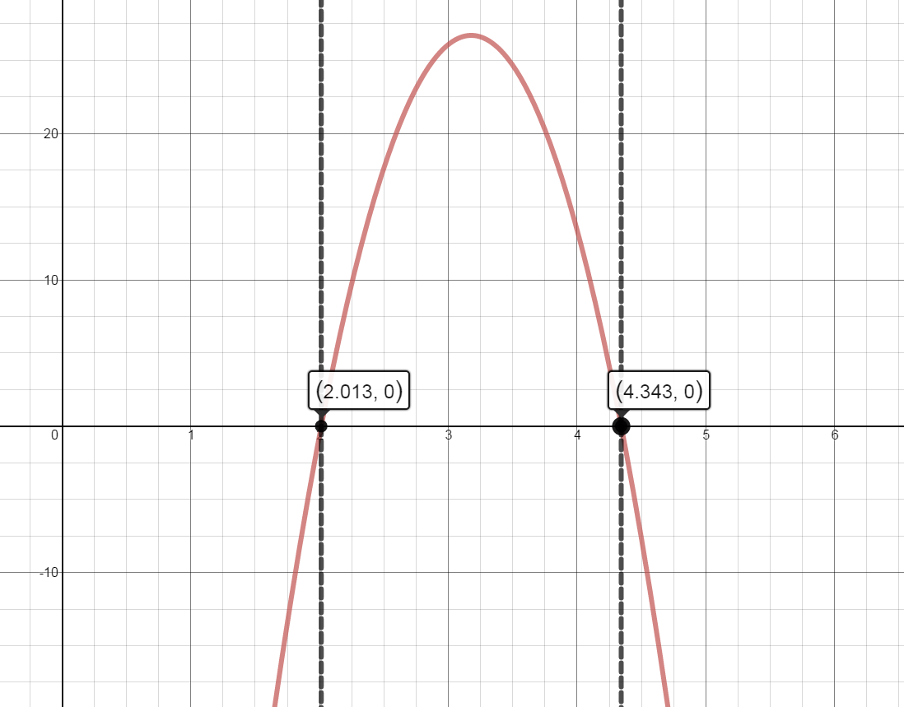
Sign chart for ${A}''\left( t \right)$ reading left to right:
negative, ${A}''\left( 2.013 \right)\approx 0$ , positive, ${A}''\left( 4.343 \right)\approx 0$, negative
Determine the intervals on which $A(t)$ is concave up / concave down.
On what intervals is A(t) concave up? Interpret these results.
The function is concave up on the interval: $\left( 2.013,4.343 \right).$
On the interval $\left( 2.01,3.10 \right),$ the annual percent return on investments is decreasing at a decreasing rate each year.
On the interval $\left( 3.10,4.34 \right),$ the annual percent return on investments is increasing at an increasing rate each year.
On what intervals is $A(t)$ concave down? Interpret these results.
The function is concave down on the intervals: $\left( 0,2.013 \right)\cup \left( 4.343,6 \right).$
On the intervals from $\left( 0,1.2 \right)\,\text{and}\,\left( 4.34,5.23 \right),$ the annual percent return on investments is increasing at a decreasing rate each year.
On the interval $\left( 3.10,4.34 \right),$ the annual percent return on investments is decreasing at an increasing rate each year.
Identify points of inflection for $A(t)$. Interpret these results.
There are two points of inflection:
$\left( 2.013,15.618 \right)$ and $\left( 4.343,20.557 \right)$
According to the model, the annual percent return on investments was changing most rapidly at $t \approx 2.01$ and $t \approx 4.34$ (in years after 2008).
Graph $A(t).$
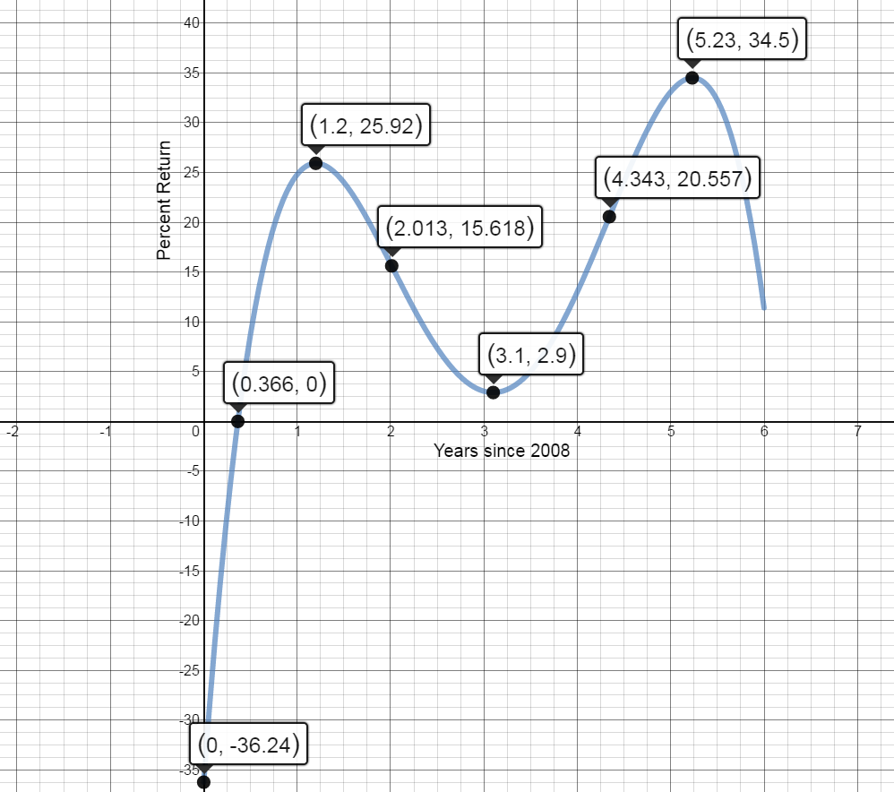
3.3 Second Derivative Test Homework
Use the Second Derivative Test to analyze the function. Identify intervals of concavity and points of inflection on the graph of the function.
$f(x)=3{{x}^{2}}+5x-2$
Concave Up and Concave Down
${f}''\left( x \right)=6$
Values of x where ${f}''(x)=0:$
There are no values of x where ${f}''\left( x \right)=0.$
Values of x where ${f}''\left( x \right)$ is undefined:
There are no values of x where ${f}''\left( x \right)$ is undefined.
Values of x where $f\left( x \right)$ is undefined:
There are no values of x where $f\left( x \right)$ is undefined.
Because there are no x values that meet the requirements for a partition or critical value, $f(x)$ will maintain the same concavity across the entire domain.
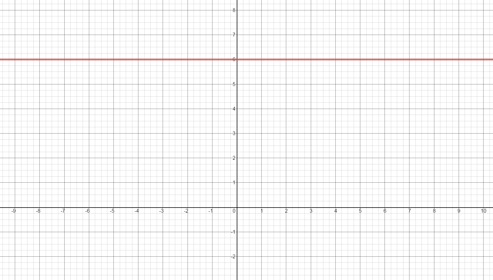
Sign chart for ${f}''\left( x \right)$: positive on domain
Concave up:
The graph of $f(x)$ is concave up on the interval $\left( -\infty ,\infty \right)$.
Concave down:
There are no intervals where $f(x)$ is concave down.
There are no values of x where ${f}''\left( x \right)=0$.
Values of x where ${f}''\left( x \right)$ is undefined:
$ 5x+1=0$
$ x=-\frac{1}{5}$
Values of x where $f\left( x \right)$is undefined:
$5x+1=0$
$x=-\frac15$
Separate into intervals using: $x=-\frac{1}{5}$.
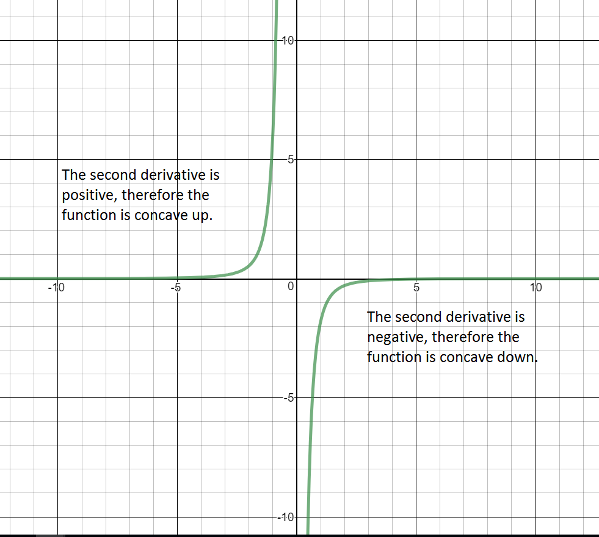
Sign chart for ${f}''\left( x \right)$: positive, ${f}''\left( -\frac{1}{5} \right)=$ undefined, negative
Concave up:
The graph of $f(x)$ is concave up on the interval $\left( -\infty ,-\frac{1}{5} \right).$
Concave down:
The graph of $f(x)$ is concave down on the interval $\left( -\frac{1}{5},\infty \right).$
Inflection Points:
Even though the function changes from concave up to concave down at $x=-\frac{1}{5}$, there are no points of inflection because the function is undefined at $x=-\frac{1}{5}.$
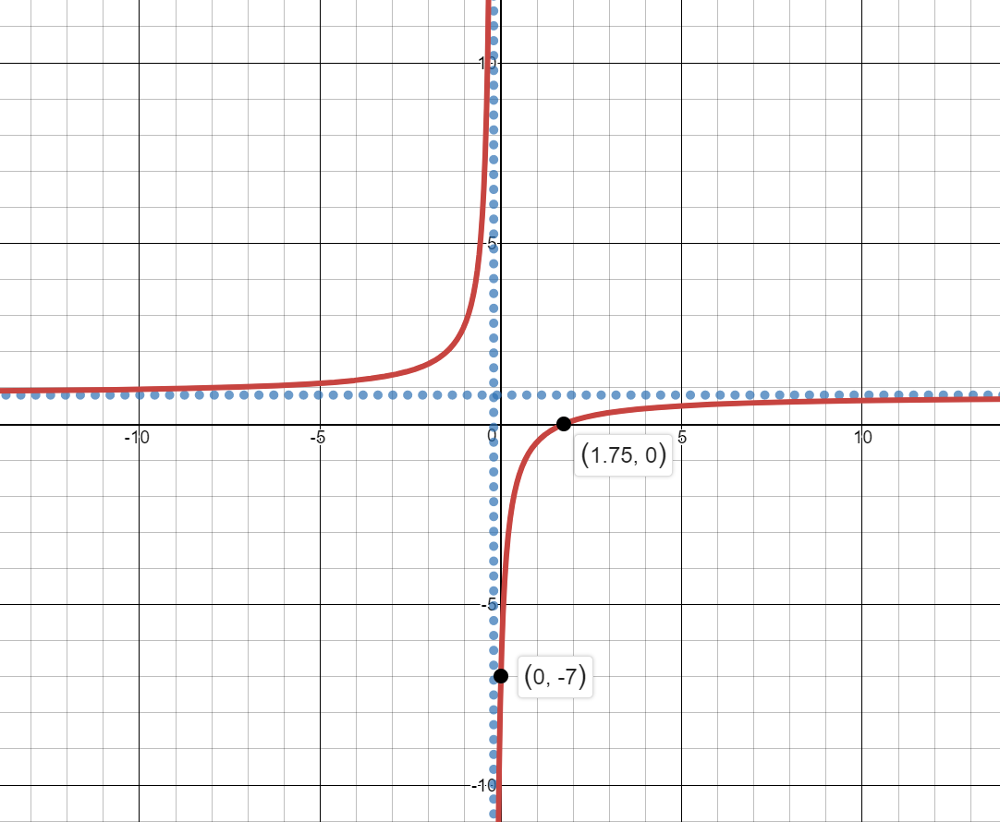
Using data from Statista, the total annual amount spent on the purchase of golf equipment in the United States for the years 2008-2014 can be modeled by the following equation:
$$A(t)=-31.94{{t}^{3}}+301.16{{t}^{2}}-665.61t+3454.63$$ where t is in years since 2008 and A(t) is in millions of dollars.
Use the Second Derivative Test to analyze the function. Identify intervals of concavity and points of inflection on the graph of the function.
Analyze ${A}''\left( t \right)$
${A}''\left( t \right)=-191.64t+602.32$
Graph the critical numbers on a number line and determine the sign for each interval.
Values of t where ${A}''(t)=0$
$t\approx 3.14$ years since 2008
Values of t where ${A}''\left( t \right)$ is undefined.
There are no values of t where ${A}''(t)$ is undefined
Values of t where $A\left( t \right)$ is undefined.
There are no values of t where $A\left( t \right)$ is undefined
Separate into intervals using: $t=3.14$.
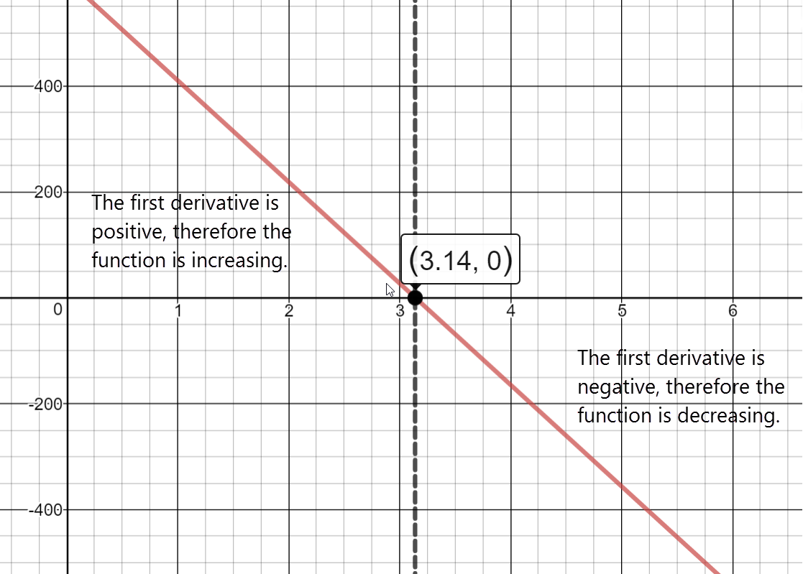
Sign chart for ${A}''\left( t \right)$ reading left to right: positive, ${A}''\left( 3.14 \right)\approx 0$, negative
Determine the intervals on which $A(t)$ is concave up / concave down
On what intervals is $A(t)$ concave up? Interpret these results.
The function is concave up on the interval: $\left( 0,3.14 \right)$
When interpreting concavity results, we will segment the interval $\left( 0,3.14 \right)$ into sections based on increasing/decreasing behavior of $f(x)$.
On the interval from $\left( 0,1.43 \right)$ the amount spent annually was decreasing at a decreasing rate. On the interval from $\left( 1.43,3.14 \right)$, the amount spent each year was increasing at an increasing
rate.
On what intervals is $A(t)$ concave down? Interpret these results.
The function is concave down on the intervals: $\left( 3.14,6 \right)$
On the interval from $\left( 3.14,4.86 \right)$ the amount spent annually is increasing at a decreasing rate. From $\left( 4.86,6 \right)$ the amount spent each year was decreasing at an increasing rate.
Identify points of inflection for A(t). Interpret these results.
There is a point of inflection at $t=3.14$ years since 2008.
According to the model, the amount of money spent on golf equipment was changing most rapidly at x=3.14 (in years after 2008). At that time, the annual amount spent was increasing at a rate of \$280.93 million per
year and the total amount spent was $3345.1 million.
Graph $A(t)$
Clearly marking the characteristics identified above. Use graphing paper and colored pencils. Your graph should cover an entire piece of graph paper.
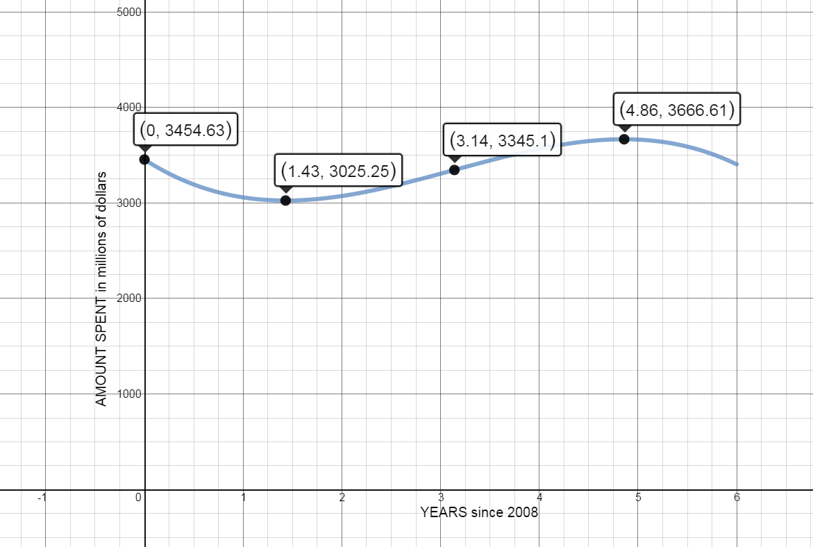
In order to accurately use the model, t values should be interpreted discretely, since the data used was given in discrete values (2008, 2009, etc) Using only discrete values for years, identify the relative maximums and
minimums from the function: